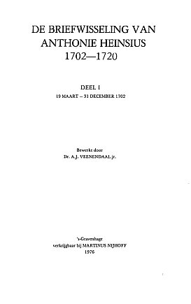

Digitale Versie Briefwisseling Anthonie Heinsius 1702-1720
Dit is de digitale versie van de negentien delen Briefwisseling van Anthonie Heinsius 1702-1720, uitgegeven in de Rijks Geschiedkundige Publicatiën.
Digitalisering
De boeken zijn toegankelijk gemaakt door ze te scannen en met behulp van OCR (Optical Character Recognition) doorzoekbaar te maken.
Handleiding
U kunt deze boeken raadplegen door middel van
- 1a) De bladerfunctie midden bovenaan dit scherm of 1b) de thumbnails via de derde tab in het linkerscherm.
- 2) Een aanklikbare inhoudsopgave via de eerste tab in het linkerscherm.
- 3) Via de tweede tab, "Brievenlijst", kunt u zoeken naar brieven van of aan een specifieke correspondent en daarbij selecties maken op datum.
- 4) Zoeken op woord in de door de OCR herkende tekst via de vierde tab in het linkerscherm. U dient er daarbij rekening mee te houden dat de tekst niet 100% doorzoekbaar is. De aanklikbare en gemarkeerde treffers
worden vervolgens in hetzelfde linkerscherm getoond. Wanneer u voor pdf of tekst (tab in het rechterscherm) kiest bij het tonen van de pagina, zal de gevonden treffer worden gemarkeerd.
Bij het tonen van de image is dit (nog) niet mogelijk.
- 5) Zoeken met behulp van de cumulatieve index op alle negentien delen via de vijfde tab in het linkerscherm. Deze index verwijst alleen naar het deelnummer. Deze cumulatieve index van persoonsnamen is ontstaan tijdens de
bewerking van de uitgave De Briefwisseling van Anthonie Heinsius 1702-1720, Rijks Geschiedkundige Publicatiën, Grote Serie, 's-Gravenhage 1976-2001. Aanvankelijk was dit een index op kaarten, die naderhand is overgebracht in
een computerbestand en verder uitgebreid en verbeterd. Er in opgenomen zijn de ongeveer 7.000 personen die in de 19 delen voorkomen, over de periode van 18 maart 1702 tot eind juli 1720.
Door de centrale rol die de Hollandse raadpensionaris Anthonie Heinsius in deze jaren speelde in het politieke en militaire leven, zijn er weinig vooraanstaanden uit geheel Europa die niet in een of meer delen voorkomen,
hetzij als correspondent, hetzij als iemand die genoemd wordt. Hierbij valt allereerst te denken aan vorsten, staatslieden, diplomaten en militairen van vele nationaliteiten. Maar ook regenten van de Republiek,
vooral natuurlijk van de provincie Holland, duiken veelvuldig op in de correspondentie. Verder zijn er predikanten, drukkers, refugies, avonturiers, weduwen en wezen, baantjesjagers, profiteurs en vele anderen die op een
of andere manier voorkomen in de brieven. Zij zijn allemaal te vinden in dit bestand.
Personen zijn opgenomen op hun achternaam, behalve regerende vorsten en hun familieleden, die op de voornaam zijn te vinden. Franse namen, voorafgegaan door voorvoegsels als Du, Des, La, etcetera zijn in principe opgenomen
op dat voorvoegsel, vaak met een verwijzing bij het hoofdbestanddeel van de naam. Bij personen die van oorsprong Frans, maar later vernederlandst zijn, is dit niet altijd consequent uitgevoerd. Het verdient dus aanbeveling
op zowel het hoofdbestanddeel van de naam als op het voorvoegsel te zoeken. Romeinse cijfers achter de naam geven de delen van de Heinsius-uitgave aan, waar de persoon in kwestie voorkomt. Is een cijfer cursief gezet,
dan betekent dat dat er in dat deel gegevens over de persoon in de voetnoten te vinden zijn. De volledige titels van de opgegeven literatuur zijn te vinden in de verschillende delen van de Heinsius-editie. Een @ achter een naam
geeft aan dat de betreffende persoon ooit aan Heinsius heeft geschreven, een # betekent dat Heinsius ooit heeft geantwoord. N.n.g. betekent niet nader geïdentificeerd, en in zulke gevallen is alleen datgene vermeld wat
uit de brief blijkt.
De pagina's openen standaard als 'image', maar u kunt ook kiezen (dmv tabjes rechtsboven) voor tonen als 'pdf' of als 'OCR'. Bij het
tonen als OCR ziet u de tekst zoals deze bij het scannen is herkend maar u ziet ook wat niet is herkend.
Colofon
Projectpagina Briefwisseling Anthonie Heinsius
Homepage retroboeken
Homepage